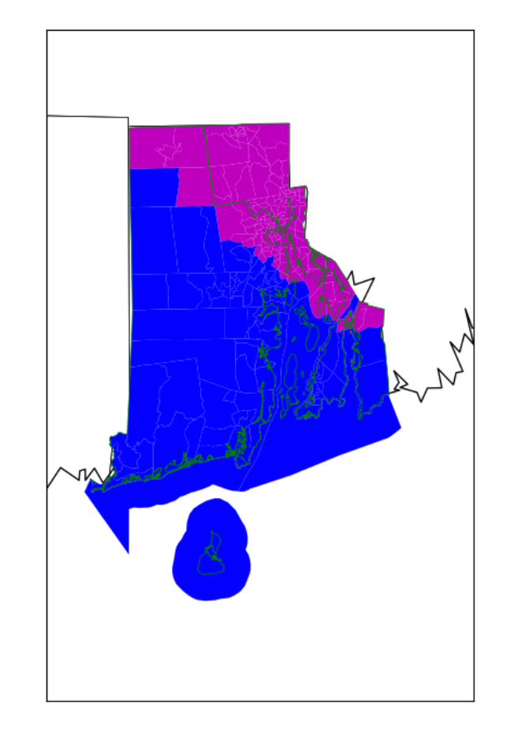

Tiffany Tillett
Growing up, I always enjoyed math and science, but it wasn't until I was in college that I really started to learn about computer science. I remember coding different games in CS106a/b at Stanford and going back to play the games multiple semesters later. There was a huge sense of pride that came from creating something that I could actually play and show to my friends and family. I didn't think I would want to do software full-time, so I stuck with Electrical Engineering and went on to work at Intel as a Product Development Engineer.
Over time, as I found myself writing various scripts and doing automation projects, I realized that I actually did enjoy coding more than I thought I would. I found myself looking for more opportunities to do this type of work and decided to go back to school and make a transition into a more software-oriented role. I am now happy to say that I am a Software Engineer at Google!
In my spare time, I work on my YouTube Channel and my Instagram page where I upload music and lifestyle content.
I also offer 1:1 computer science/coding help. For more information on this, please see Consulting
.YouTube
Here is my latest upload. For more videos, please check out my youtube channel :)
Experience
Software Engineer - Site Reliability Engineering
I work on various reliability related projects for Geo services including writing code as needed. I also ensure that our services meet SLOs by triaging, debugging and resolving both urgent and non-urgent issues via our team's on-call rotation. Additionally, I provide support to newer Google SREs via training and mentorship.
Product Development Engineer
I developed and enabled scan content on various products to ensure that the DPM (defects per million) were within customer expectations. This included pre-silicon validation as well as post-silicon bring-up on the tester. I also developed automation for various items including test coverage calculation, test check-in and data analysis. After March 2018, I also managed stakeholders and team deliverables as well as provided training and mentorship to other team members as the Product Owner/Team Lead.
Education
University of Texas at Austin
GPA: 3.97
Stanford University
Skills
- Python
- Java
- C++
- C
- Perl
- Cross Functional Teams
- Agile Development & Scrum
Projects
-
Advanced Programming Tools: Cramcom
We developed a study tool enabling students to create and manage study groups, schedule and conduct study sessions within those groups as well as a variety of other features
-
Linear Programming – Congressional Maps
We explored the idea of using linear optimization to draw congressional maps in order to eliminate gerrymandering. We drew the Senate maps for Rhode Island as a test case. Please review my partner's blog post for more details

Volunteer
-
SAT Prep
I taught a mini-series of SAT prep courses for the athletes on Lake Houston Athletics and a separate one for the youth at Bibleway Christian Center.
-
Intro to Coding Workshop
I led an intro to coding workshop for middle school girls at the Youth Symposium for Sigma Gamma Rho Sorority, Inc. They learned how to navigate a robot through a maze using the right hand rule.

Consulting
Coding HelpI offer 1:1 coding help to either explain computer science fundamentals or help with homework. Please book a slot on my Calendly. It would also be helpful if you send a sample/description of what you are looking for help with to tiffanyarielle5@gmail.com, so that I can be prepared for our session. Additionally, please ensure that you are able to join a meeting and share your screen over Google Meet. I will try my best to be accommodating if there are technical issues, but I cannot guarantee that I will have extra time available.